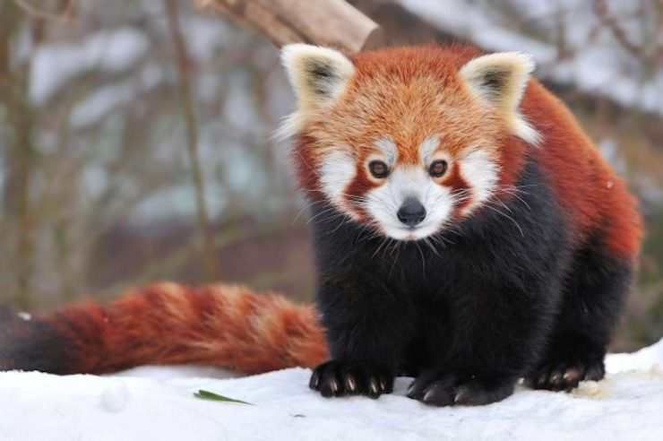
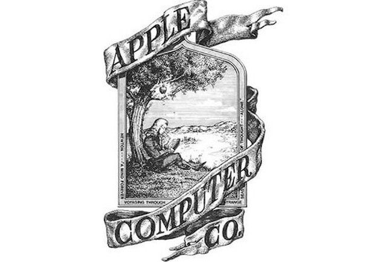

У Гімалаях (південно-західний Китай) мешкає мала панда (червона панда). В англійській мові її називають
Firefox. Це слово надихнуло творців популярного браузера… ось тільки на логотип вони чомусь помістили червону
лисицю, а не панду.

Джерело: https://yablyk.com/wp-content/uploads/2017/05/red-panda.jpg
На першому логотипі Apple був зображений сер Ісаак Ньютон, який сидів під яблунею. Над ним нависає ось-ось готове впасти яблуко.

Джерело: https://yablyk.com/wp-content/uploads/2016/01/apple-original-logo.jpg
Середньостатистичний користувач комп'ютера моргає 7 разів на хвилину. Нормальний показник – 12 разів на хвилину.
Пальці наборщика тексту загалом протягом дня «пробігають» 20 км.
30 ноября каждого года отмечается Всемирный день компьютерной безопасности («Computer Security Day“).
30 листопада кожного року відзначається Всесвітній день комп'ютерної безпеки (Computer Security Day).
Радіо знадобилося 38 років, щоб набрати ринкову аудиторію в 50 млн. слухачів, телебаченню — 13 років, iPod — 3 роки.
Текст з екрану читається на 10% повільніше, ніж із паперу.
Перший інтернет-домен (назва сайту) називався www.symbolics.com і був зареєстрований 15 березня 1985 року.
1984 року до Інтернету було підключено 1 000 пристроїв, 1992 року – 1 млн, 2008 – 1 мільярд.
Facebook отримав інтерфейс у синьому кольорі тому, що його творець Марк Цукерберг не розрізняє червоного та зеленого кольору.
Реєстрація доменних імен була безкоштовною до 1995 року.